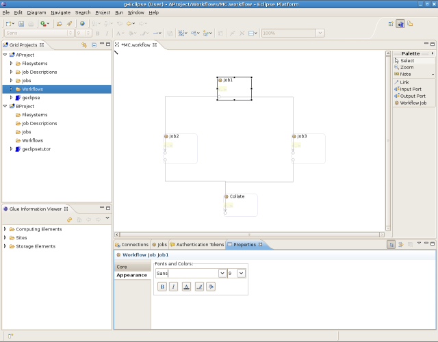

g-Eclipse comes with a graphical workflow builder that allows the building of complex workflows. These workflows can then be submitted for execution to different workflow engines supported by the various grid middleware. The workflow builder is still under heavy development but is included in this release to receive initial feedback relating to its look & feel and usage.
To get started with creating a workflow, right-click on the 'Workflows' folder in a Grid Project and choose New > Workflow Diagram. This will open up the New Workflow Wizard page where you will be prompted to enter a name for your workflow. The filename should have an extention of .workflow. On clicking Finish, the the newly created workflow is opened in the workflow editor.
You can add a workflow job by selecting Workflow Job from the Palette on the right and clicking in the empty editor area. A rectangular box (representing a job) appears in the editor and you can give the job a name by typing it in the text area. Next, you can add an Output port to the workflow job by selecting Output Port from the Palette and then clicking in the workflow job. A little dark-blue box appears, showing that your job now has an Output Port. Following a similar procedure, you can add another job to the workflow and add an Input Port to it. Then, select Link from the palette, click on the Output Port of the first job, drag the pointer until you reach the Input Port of the second job and release. The two so far independent jobs are now linked to form a simple workflow.
